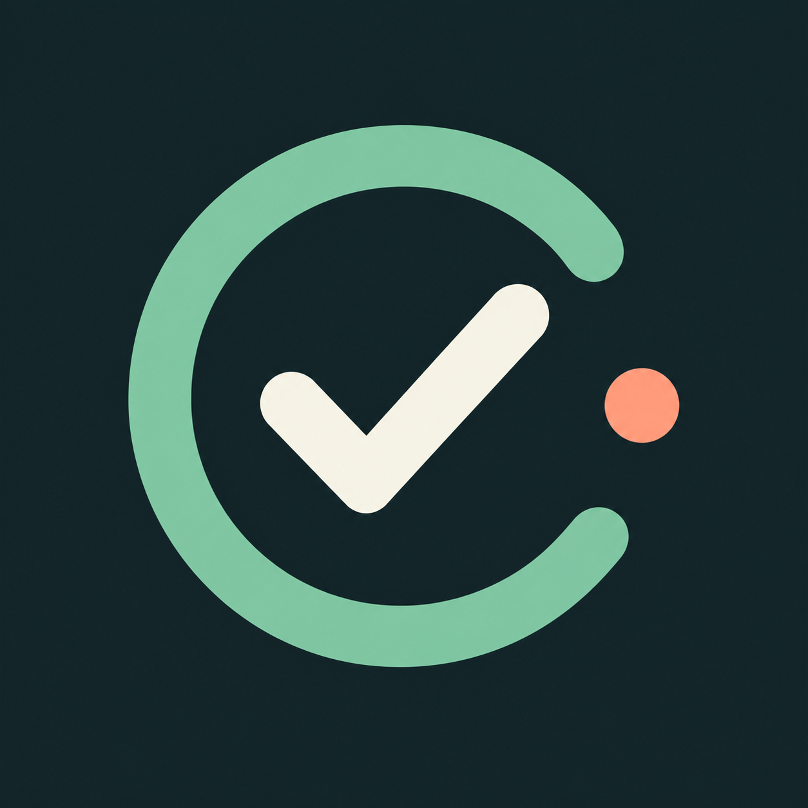

Logo and launch design preview. These are design boards, not screenshots of a running iPhone.
App icon
A daily cycle. A small step forward.
The iOS icon keeps a full opaque square; the system applies its rounded mask.
Launch · Light
Launch · Dark